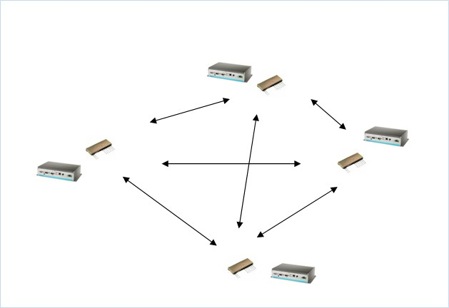

10.3 FM Application Example and Programming
FM Module Application:-10.4.1 Broadcast Communication
Client/Server messaging program, allow all UNO embedded PCs which are connected to FM Radio to receive and send message.
Understand some basic command for FM modules:-
| NO# | Command | Description | Notes |
| 1 | ER_CMD#U1 | Set baud rate to 3400 | |
| 2 | ER_CMD#U2 | Set baud rate to 4800 | |
| 3 | ER_CMD#U3 | Set baud rate to 9600 | |
| 4 | ER_CMD#U4 | Set baud rate to 19200 | Default |
| 5 | ER_CMD#U5 | Set baud rate to 38400 | |
| 6 | ER_CMD#C0 | Set Channel to 869.9Mhz | Deafult |
| 7 | ER_CMD#C1 | Set Channel to 914.65Mhz | |
| 8 | ER_CMD#C4 | Set Channel to 869.85Mhz | |
| 9 | ER_CMD#A11 | Encryption ON | |
| 10 | ER_CMD#A20 | Encryption OFF | Deafult |
| 11 | ER_CMD#R1 | RESET module to default setting |
Understand the application flow,
1. Write an application able to communicate the device via RS-232.
2. The modules within the same network must set to the same GOURP ID and Channel to receive broadcast messages.